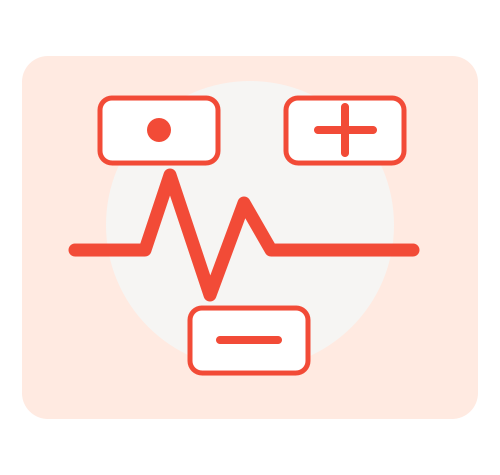

LECTURE 6
Running AI
in production
on Databricks
Monitoring, evaluation & FinOps
LLMOps course

LECTURE 6
Monitoring, evaluation & FinOps
LLMOps course

What we will cover today
A view reflects stored data; a separate job runs the scorers.
The experiment is the MLflow entry point; its trace location selects storage.
Input, output, status, duration and deployment metadata.
Arguments, returned evidence, failures and latency.
Model name, usage and duration when that call is instrumented.
Workspace-managed trace storage. Existing experiments may use this default.
OTel spans and feedback in Delta tables. Query with SQL and display in MLflow.
Application and platform events, logs, and optional OTel signals. Configure the App telemetry destination.
An instrumented request and its spans, linked to an experiment. Configure the experiment trace location.
Both can use UC tables, but they are separate configuration paths.
Request volume, errors and latency. Investigate failing spans.
Assessment results and rationale for selected production traces.
Model usage, evaluation jobs, warehouse and other workloads.
Deterministic checks: response length, formatting, schema or known patterns.
Model-based assessments such as tone and the quality of an opening.
No new App request is required to evaluate an existing trace.
candidates = spark.sql(candidate_query, args={...}).collect()
traces = [mlflow.get_trace(row.trace_id) for row in candidates]
result = mlflow.genai.evaluate(
data=traces,
scorers=[scorer],
)MLflow receives the original trace objects and records the scorer assessments on those traces.
Checks the final assistant message against the length threshold.
LLM judge evaluates whether the response is polite and professional.
LLM judge evaluates whether the opening engages the reader.
The view shows the new trace and available span metrics after ingestion.
The job writes feedback; the view then shows the resulting scores.
Run the job manually or choose a schedule based on the required freshness and cost.
The view reads current data. It does not copy or evaluate traces.
Bundle deployment triggers a job that creates or updates the view. Trace tables must already exist.
The optional testing job evaluates existing traces when explicitly run. LLM judges incur usage.
The dashboard definition is a separate bundle resource.
The assessment has not yet been recorded or is not usable.
Inspect the span status and the error at the failing operation.
The current course agent does not instrument each model call individually.
Validate inputs and tool arguments before invoking a tool.
Apply the output checks relevant to the use case.
Evaluate stored traces and inspect quality and safety patterns.
Jobs, serverless compute and SQL warehouses.
Model serving, AI Search and gateway calls.
Data storage, transfer and related cloud charges.
Databricks usage and cloud infrastructure can appear on different bills.
Make unattributed usage visible rather than silently assigning it.
SELECT SUM(u.usage_quantity * p.pricing.effective_list.default)
FROM system.billing.usage u
JOIN system.billing.list_prices p ON p.sku_name = u.sku_name
AND u.usage_end_time >= p.price_start_time
AND (p.price_end_time IS NULL OR u.usage_end_time < p.price_end_time)Use the correct time window and identify the pricing basis. List price can differ from negotiated cost, credits and cloud charges.
Assign a tagged workload to its owner.
Use a documented allocation measure for shared resources.
Track missing or incomplete tags as a separate line.
Use budgets, thresholds and system tables to understand spend.
Use access controls and product-specific limits where appropriate.
Find a UC-backed trace, inspect the spans, and evaluate the existing request.
Find its monitoring row, compare feedback, and identify missing instrumentation.
Trace the request. Evaluate the evidence.
Understand the cost.